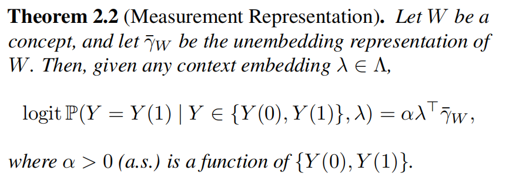
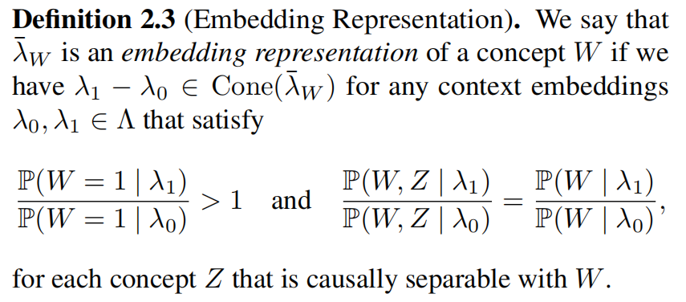
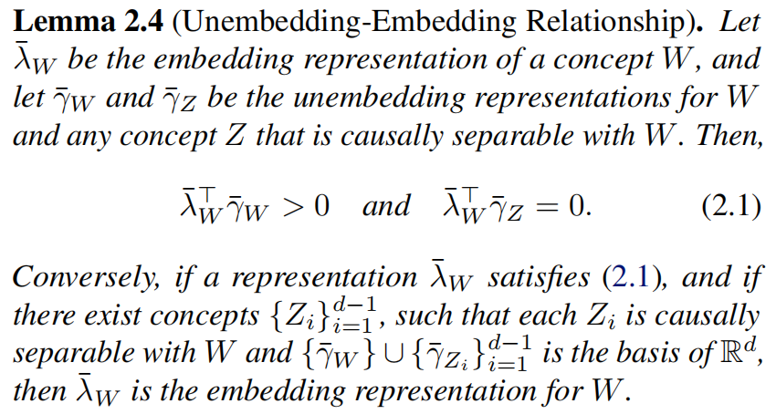
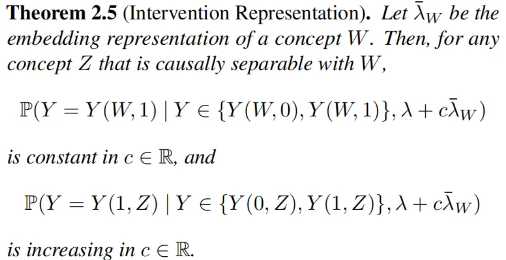

Paper Walkthroughs
The Linear Representation Hypothesis and the Geometry of Large Language Models
Informally, the "linear representation hypothesis" is the idea that high-level concepts are represented linearly as directions in some representation space.
Background on Language Models
A language model is fundamentally a probability distribution over sequences of tokens. Given a context sequence \(x = (x_1, x_2, \ldots, x_t)\), the model predicts the next token \(y\) by computing \(\mathbb{P}(y \mid x)\).
Modern LLMs implement this distribution through a two-stage process:
- Embedding Stage: The context \(x\) is mapped to a representation vector (or embedding vector) \(\lambda(x) \in \Lambda \simeq \mathbb{R}^d\), where \(\Lambda\) is the representation space and \(d\) is the model's hidden dimension. This embedding captures the semantic and syntactic information from the context.
- Unembedding Stage: Each possible output word \(y\) in the vocabulary is associated with an unembedding vector \(\gamma(y) \in \Gamma \simeq \mathbb{R}^d\), where \(\Gamma\) is the unembedding space. The probability of generating word \(y\) is then given by the softmax distribution:
More precisely, normalizing over the entire vocabulary \(\mathcal{V}\):
What is a Concept?
Before we can talk about whether concepts are represented linearly, we need to be precise about what a "concept" even means in the context of LLMs. The key insight is surprisingly simple: a concept is anything you can change about an output while keeping everything else the same.
Concepts as Factors of Variation
Think about the sentence "The king rules the kingdom." We can transform this in various independent ways:
- Language: "The king rules the kingdom" → "Le roi règne sur le royaume" (English → French)
- Gender: "The king rules the kingdom" → "The queen rules the kingdom" (male → female)
- Number: "The king rules the kingdom" → "The kings rule the kingdom" (singular → plural)
- Tense: "The king rules the kingdom" → "The king ruled the kingdom" (present → past)
Each of these transformations changes one aspect of the output while leaving the others intact. These aspects—language, gender, number, tense—are what we call concepts.
Formalizing Concepts with Causal Language
To make this precise, we model a concept as a concept variable \(W\) that:
- Is caused by the context \(X\) (the input to the model)
- Acts as a cause of the output \(Y\) (the word the model generates)
This gives us a simple causal chain: \(X \to W \to Y\).
For simplicity, let's focus on binary concepts—concepts that take two values. For example:
- Gender: \(W \in \{\text{male}, \text{female}\}\)
- Language: \(W \in \{\text{English}, \text{French}\}\)
- Number: \(W \in \{\text{singular}, \text{plural}\}\)
To make the math cleaner, we'll encode binary concepts numerically. For instance, we might set male \(\Rightarrow\) 0 and female \(\Rightarrow\) 1. The choice of which value is 0 or 1 is arbitrary, but it will affect the sign of concept vectors we discover (more on this later).
The Linear Representation Hypothesis
The Cone of a Vector
Before stating the definition, we need a geometric tool. Given a vector \(v \in \mathbb{R}^d\), its cone is:
Definition: Unembedding Representation

What does this mean geometrically?
- Take any counterfactual pair \((Y(0), Y(1))\) for concept \(W\)—for example, ("king", "queen")
- Compute the difference of their unembedding vectors: \(\gamma(\text{"queen"}) - \gamma(\text{"king"})\)
- This difference should point in the same direction as \(\widetilde{\gamma}_W\)
- The same should hold for all pairs: ("man", "woman"), ("actor", "actress"), etc.
Connection to Measurement
The first major result of the paper is that this unembedding representation is intimately connected to measuring concepts using linear probes:
What does this theorem say?
Consider a concrete scenario: suppose we know the output token will be either "king" or "queen" (say, because the context is about a monarch). The theorem tells us that the probability of outputting "king" (versus "queen") is logit-linear in the language model representation \(\lambda\), with regression coefficients given by \(\widetilde{\gamma}_W\).
More formally: the log-odds
Embedding vs Unembedding
Recall that a language model involves two spaces:
- Unembedding space \(\Gamma\): where output words \(y\) live as vectors \(\gamma(y)\)
- Embedding space \(\Lambda\): where context representations \(\lambda(x)\) live
We've just seen that if concept differences \(\gamma(Y(1)) - \gamma(Y(0))\) align in the unembedding space, we get linear measurement. What happens if we look at context differences in the embedding space?
 Theorem 2.5 tells us what happens when we add the embedding representation \(\overline{\lambda}_W\) to a context embedding. This is the mathematical foundation for model steering or activation engineering.
More results and experiments are in the paper. Check it out at arxiv.org/abs/2311.03658!